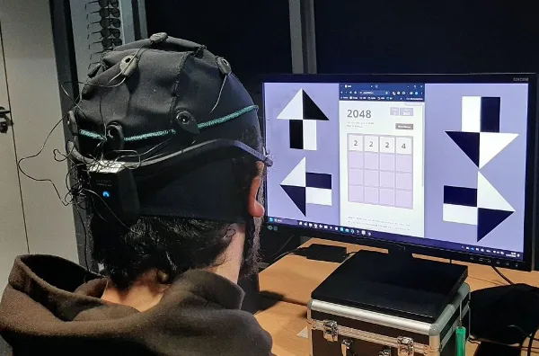

Dhimitrios Duka
Incoming PhD Student at the University of Tübingen.
I am a Research Assistant at the Max Planck Institute for Informatics, working with Dr. Anna Kukleva in the Computer Vision and Machine Learning department. In December 2026, I will join the University of Tübingen as a PhD student with Prof. Dr. Hilde Kuehne.
I completed my master's in Computer Science at Saarland University, where my thesis was supervised by Prof. Dr. Bernt Schiele and Dr. Anna Kukleva. Previously, I earned my bachelor's in Computer Engineering from the Polytechnic University of Tirana, graduating with high honors. My bachelor's thesis, supervised by Assoc. Prof. Evis Trandafili, introduced the first image captioning system for the Albanian language.
My main research interests are vision-language models, multimodal representation learning, and video understanding. However, I am always open to new ideas and collaborations in related fields.


News
-
Oct 2026
I will join the CVML group of Prof. Dr. Hilde Kuehne at the Tübingen AI Center, University of Tübingen, as a PhD student in December 2026.
-
Oct 2026
I successfully defended my master's thesis, Right on Time: Temporal Boundary Refinement for Improved Egocentric Visual-Language Pre-Training, at Saarland University. The work was done at the Max Planck Institute for Informatics, supervised by Prof. Dr. Bernt Schiele and Dr. Anna Kukleva.
-
Sep 2026
Our paper TeMo: Temperature Modulation for Multimodal Contrastive Learning is now available on arXiv.
-
Apr 2026
I gave an invited talk on MM-TS at the Department of Computer Engineering, Middle East Technical University.
-
Mar 2026
I gave an oral presentation of our paper MM-TS at WACV 2026 in Tucson, Arizona.
-
Oct 2025
Our paper MM-TS: Multi-Modal Temperature and Margin Schedules for Contrastive Learning with Long-Tail Data was accepted at WACV 2026 as an oral presentation.
Publications
-
 arXiv Preprint 2026
arXiv Preprint 2026TeMo: Temperature Modulation for Multimodal Contrastive Learning
Contrastive learning approaches achieve strong performance by training models to bring similar samples closer while pushing dissimilar samples apart. A crucial component of contrastive learning is the temperature hyperparameter τ, which controls the penalty strength applied to negative samples. However, most existing methods either fix this hyperparameter or learn a global value during training. In this paper, we introduce TeMo, Temperature Modulation framework, a similarity-based modulation approach that adaptively adjusts the temperature for each positive-negative pair according to their similarity, enabling more fine-grained multimodal contrastive learning. Our approach seamlessly integrates temperature-modulated multimodal and unimodal losses with the standard multimodal contrastive loss by gradually transitioning between them. This design allows the model to capture both coarse- and fine-grained semantics at different training stages. Extensive experiments demonstrate that each component of TeMo consistently enhances performance across diverse zero-shot retrieval and classification tasks, establishing new state-of-the-art results.
BibTeX@article{duka2026temo,author = {Duka, Dhimitrios and Schiele, Bernt and Kuehne, Hilde and Kukleva, Anna},title = {TeMo: Temperature Modulation for Multimodal Contrastive Learning},journal = {arXiv preprint arXiv:2609.07540},year = {2026}} -
 WACV 2026 · Oral
WACV 2026 · OralMM-TS: Multi-Modal Temperature and Margin Schedules for Contrastive Learning with Long-Tail Data
Contrastive learning has become a fundamental approach in both uni-modal and multi-modal frameworks. This learning paradigm pulls positive pairs of samples closer while pushing negatives apart. In the uni-modal setting (e.g., image-based learning), previous research has shown that the strength of these forces can be controlled through the temperature parameter. In this work, we propose Multi-Modal Temperature and Margin Schedules, extending the concept of uni-modal temperature scheduling to multi-modal contrastive learning. Our method dynamically adjusts the temperature in the contrastive loss during training, modulating the attraction and repulsion forces in the multi-modal setting. Additionally, recognizing that standard multi-modal datasets often follow imbalanced, long-tail distributions, we adapt the temperature based on the local distribution of each training sample. Specifically, samples from dense clusters are assigned a higher temperature to better preserve their semantic structure. Furthermore, we demonstrate that temperature scheduling can be effectively integrated within a max-margin framework, thereby unifying the two predominant approaches in multi-modal contrastive learning: InfoNCE loss and max-margin objective. We evaluate our approach on four widely used image- and video-language datasets, Flickr30K, MSCOCO, EPIC-KITCHENS-100, and YouCook2, and show that our dynamic temperature and margin schedules improve performance and lead to new state-of-the-art results in the field.
BibTeX@InProceedings{Sheludzko_2026_WACV,author = {Sheludzko, Siarhei and Duka, Dhimitrios and Schiele, Bernt and Kuehne, Hilde and Kukleva, Anna},title = {MM-TS: Multi-Modal Temperature and Margin Schedules for Contrastive Learning with Long-Tail Data},booktitle = {Proceedings of the IEEE/CVF Winter Conference on Applications of Computer Vision (WACV)},month = {March},year = {2026},pages = {7376-7386}}
Talks
-
Apr 2026
Invited talk on MM-TS: Multi-Modal Temperature and Margin Schedules for Contrastive Learning with Long-Tail Data, Department of Computer Engineering, Middle East Technical University.
-
Mar 2026
Oral presentation of MM-TS: Multi-Modal Temperature and Margin Schedules for Contrastive Learning with Long-Tail Data at WACV 2026, Tucson, Arizona.
-
Aug 2025
Seminar talk in Generative Models in Computer Vision (GMCV), a seminar led by Dr. Jan Eric Lenssen.
-
Aug 2024
Seminar talk in Explainable Machine Learning (ExML), a seminar led by Dr. Jonas Fischer.
Honors & Awards
-
2025, 2026
Recipient of the SaarlandStipendium for International Students, awarded by the StudienStiftungSaar, in the summer semesters of 2025 and 2026.
-
Feb 2024
1st Place in the CG Rendering Competition 2023/24 at Saarland University with A Voyager Between Worlds, rendered with Zeus, a ray tracer I built with Arseny Dremin.
Academic Activities
Reviewer
Projects & Open Source
-
 VS Code Extension
VS Code ExtensionsCode
A VS Code extension that brings SLURM cluster workflows into the editor: live job monitoring with progress and GPU stats, job array and history management, instant
stdout/stderraccess, and a GPU partition view for picking where to submit next. Actively maintained and used daily by fellow researchers and others working on SLURM clusters. -
Multilingual Language Model Fine-Tuning
We compare full fine-tuning with parameter-efficient methods (BitFit, LoRA, IA3) on pre-trained language models such as XGLM-564M and GPT-2, focusing on under-represented languages like Quechua (quy_Latn) and multilingual datasets like NLLB. We also visualize the models' hidden states with PCA and t-SNE to see how tokens and sentences are represented across languages, and measure the trade-offs of parameter-efficient fine-tuning.
-

Team ProjectBrains at Play: EEG‑Based Application Control
A brain-computer interface for hands-free control of existing games and desktop applications. Flickering targets are overlaid on the screen, and looking at one triggers its mapped action, such as a key press or a macro. We built it in Python and PyQt5, detecting the user's steady-state visually evoked potentials (SSVEPs) from EEG in real time.
-
 CG Rendering Competition 2023/24 · 1st Place
CG Rendering Competition 2023/24 · 1st PlaceZeus: A Ray Tracer
A ray tracer built on the lightwave framework as the final project of the Computer Graphics course at Saarland University (winter semester 2023/24). Our render, A Voyager Between Worlds, won first place in the course's rendering competition.
-
Bachelor's Thesis
A Neural Image Caption Generator for the Albanian Language
An encoder-decoder model that generates image captions in Albanian, using transfer learning from pre-trained image features in the encoder. To the best of our knowledge, it is the first image captioning system for the Albanian language.